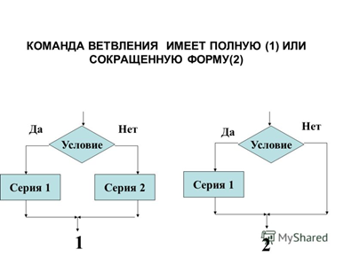

Ветвление – это такая форма организации действий, при которой в зависимости от некоторого условия выполняется одна либо другая последовательность действий.
На языке JavaScript команда ветвления записывается следующим образом:
if (< условие >) {
< действие1 >
}
then {
< действие2 >
}
if (< условие >) {
< действие1 >
}
Выполняется команда ветвления следующим образом:
В полной форме команды ветвления в начале проверяется условие и если оно выполняется (условие истинно), то выполняется < действие1 >, в противном случае выполняется < действие2 >;
в сокращенной форме - если условие истинно, то выполняется действие следующие после оператора if, если условие ложно, то на этом команда ветвления завершает свою работу.

Предложим решение задачи с использованием команды ветвления: Найти большее из двух целых чисел A и B.
var max = 0;
var a = 10;
var b = 15;
if ( a > b) {
max = a;
}
else {
max = b;
}
alert( max );
Теперь рассмотрим решение задачи по нахождения большего из трех целых чисел:
var max = 0;
var a = 10;
var b = 15;
var c = 20;
var p = 0;
if ( a > b) {
p = a;
}
else {
p = b;
}
if ( p > c) {
max = p;
}
else {
max = c;
}
alert( max );
При написании простого условия используем два какие-нибудь выражения, например A и B, связанных между собой одной из операций сравнения:
| В математике | В JavaScript |
|---|---|
| > | > |
| < | < |
| ≥ | = |
| ≤ | <= |
| = | == или === |
| <> | != или, !== |
Составные условия записываются из простых условий, связанных логическими операциями:
| В математике | В JavaSсript |
|---|---|
| И | ( ) && ( ) |
| Или | ( ) || ( ) |
| Не | !( ) |
Таблица истинности для операции &&(И)
| А | В | ( А ) && ( В ) |
|---|---|---|
| True | True | True |
| True | False | False |
| False | True | False |
| False | False | False |
То есть составное условие с использованием логической операции && (И) истинно в одном случае: когда оба простых высказывания истинны. Например, составное высказывание (2 > 1) && (2 < 3) истинно, так как оба простых высказывания истинны.
Таблица истинности для операции || (ИЛИ)
| А | В | ( А ) || ( В ) |
|---|---|---|
| True | True | True |
| True | False | True |
| False | True | True |
| False | False | False |
То есть составное условие с использованием логической операции || (ИЛИ) ложно в одном случае: когда оба простых высказывания ложны. Например, составное высказывание (2 > 5) || (2 < 3) истинно, так как одно из простых высказываний истинно.
Таблица истинности для операции ! (НЕ)
| А | !(А) |
|---|---|
| True | False |
| False | True |
То есть составное условие с использованием логической операции ! (отрицание) истинно в случае, если исходное простое высказывание было ложным и наоборот. Например, составное высказывание !(2 > 1) истинно, так как простое высказывание 2 > 1 ложно.
Составными условиями удобно пользоваться в том случае, если мы хотим избежать вложенных ветвлений.